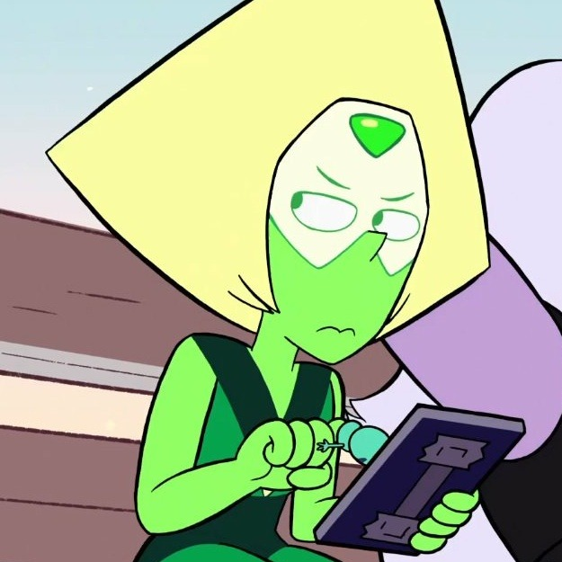

Cada noche solía orar para encontrar a mi gente Y finalmente lo hice En la carretera abierta No teníamos nada que perder, nada que ganar, ya nada que deseáramos Excepto hacer de nuestras vidas una obra de arte Vive rápido Muere joven Se salvaje Y diviértete Creo en el país que América solía ser Creo en la persona que quiero ser Creo en la libertad de la carretera abierta Y mi lema es el mismo de siempre "Creo en la amabilidad de los extraños"
link de github 